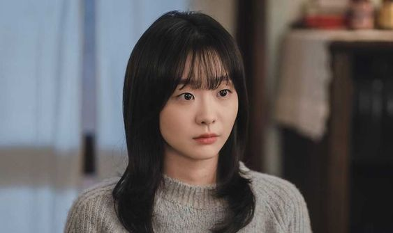

<!doctype html>
<html style="font-size: 15px;font-family: Roboto, Arial, sans-serif;">


</html><head><title>제목 : 그 해 우리는 </title>
<meta charset="utf-8">
</head>
<body>
<h2>제목 : 그 해 우리는</h2>
<p> 가난이 너무 싫은 건, 남에게 무언가 베풀 수가 없다는 거예요.
<br>특히 날 때부터 따라다닌 가난은 점점 친구와 시간을 보내는 것도 꺼리게 만들더라고요.
<br>물론 어린 마음에 꽤나 큰 상처였지만 그래도 괜찮았어요.
<br>저한텐, 지켜야 할 소중한 게 있었으니까요.
<br>그래서 그런 것들에 관심 없는 척 이기적으로 살기로 했어요. 그 편이 차라리 나으니까요.<br>
<br>연수: "야, 뭘 봐 ㅡㅡ"<br>
<br>최웅을 만나기... 전까지는요.<br>
<br>연수: "우리 사귀, 우리 사귀는 거 애들한테 말하면 죽어.
<br>그리고 막 사귄다고 귀찮게 구는 것도 안 돼, 나는 무조건 공부가 1순위야.
<br>그리고 너 공부 열심히 해야 돼, 대학 가야지.
<br>넌 뭐, 할 말 없어?"<br>
<br>잠깐 현실을 눈 감게 해준 유일한 사람이었어요. 최웅은.</p>

<p>가끔은 눈감은 현실이 너무 편안하고 간절해서 진짜 현실을 잊어버리기도 하더라고요.
<br>평범하게 남들 만큼 사는 거, 그게 내 꿈이라고 생각해왔는데... 
<br>어쩌면 이건 내가 원한 꿈이 아니라 처음부터 주어진 선택지 없는 시험지였을까?</p>
<p>그리고 애써 감았던 눈을 다시 떴을 땐 현실의 악몽은, 더 잔인하게 자라나 있더라고요.<br>
<br>연수: "대체, 우리가 왜 값아야 되는 건데? 삼촌이라는 사람 얼굴을 한 번도 못 봤는데...
<br>나는 제발 내가 감당할 수 있을 만큼만 가난했으면 좋겠어."<br>
<br>그동안의 헛된 꿈을 비웃듯. 잔인한 현실은. 어느새. 턱 끝에서 찰랑이고 있었어요. 
</p>


<p>그러니까, 우리가 헤어져야 했던 이유는.
<br>너와 나의 현실이 같지 않아서.
<br>아니, 사실 내 현실이 딱해서.<br>
<br>최웅: "우리가 왜 헤어져? 너는 꼭 힘들 때 나부터 버리더라. 내가 그렇게 제일 버리기 쉬운 거냐? 니가 가진 것 중에."
<br>연수: "아니. 내가 버릴 수 있는 거 너밖에 없어."<br>
<br>아니 사실. 지금은 내 현실 하나도 감당하기 벅차서,
<br>아니 사실은,정말 사실은, 더 있다간, 내 지독한 열등감을 너한테 들킬 것만 같아서.
</p>
</body>
</html>
